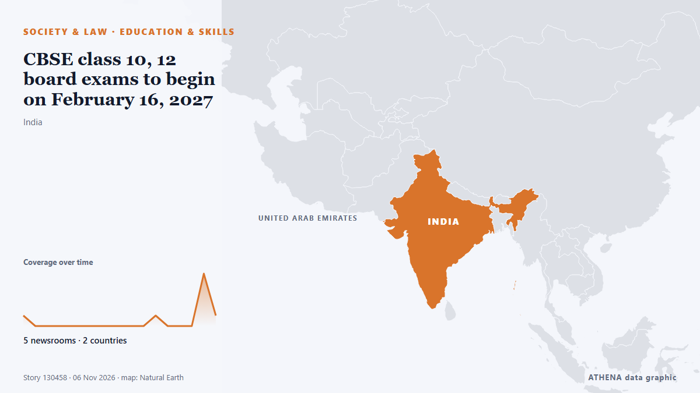

Εκπαίδευση & δεξιότητες
ΧορηγούμενοΠαρουσιάζεται από  Cybernetics and Artificial Intelligence Lab Welcome to the Cybernetics and Artificial Intelligence Laboratory, established at the Department of Business Administration of the National and Kapodistrian University of Athens. The lab is headed by Professor Dimitrios Thomakos. The lab aims to do research that can be published in top venues. Our research uses tools and methods of Artificial Intelligence, and lies in the following areas: - Forecasting - Decision making - Cyber security - Finance We are always looking forward to collaborating with exceptional students!
Cybernetics and Artificial Intelligence Lab Welcome to the Cybernetics and Artificial Intelligence Laboratory, established at the Department of Business Administration of the National and Kapodistrian University of Athens. The lab is headed by Professor Dimitrios Thomakos. The lab aims to do research that can be published in top venues. Our research uses tools and methods of Artificial Intelligence, and lies in the following areas: - Forecasting - Decision making - Cyber security - Finance We are always looking forward to collaborating with exceptional students!
| 24 Οκτ | 0 |
|---|---|
| 25 Οκτ | 0 |
| 26 Οκτ | 0 |
| 27 Οκτ | 0 |
| 28 Οκτ | 0 |
| 29 Οκτ | 0 |
| 30 Οκτ | 0 |
| 31 Οκτ | 1 |
| 1 Νοε | 0 |
| 2 Νοε | 5 |
| 3 Νοε | 5 |
| 4 Νοε | 5 |
| 5 Νοε | 8 |
| 6 Νοε | 0 |
Οι τίτλοι των ειδήσεων παρουσιάζονται στα αγγλικά, όπως δημοσιεύτηκαν.

CBSE class 10, 12 board exams to begin on February 16, 2027
The board noted that adequate gaps have been provided between examinations of subjects commonly offered together by students in both Class X and XII. από The Hindu
DOJ sues Penn State over in-state tuition for undocumented students
The Justice Department filed a lawsuit Thursday against Pennsylvania State University for allegedly allowing in-state tuition for undocumented students, saying the move discriminates against U.S.… από The Hill
Washington voters approve transgender athlete ban
Washington voters are projected to reverse the state’s long-standing policy that has allowed transgender girls to compete on girls’ and women’s school sports teams, according to Decision Desk HQ. από The Hill
Donors pledge $400 million for education in crises despite aid cuts
GENEVA, Nov 5 - Donors pledged over $400 million to help educate children in crises and war zones, the UN fund for education in emergencies said on Thursday, reaching over 90% of its target despite… από The Straits Times
Ukrainian and Slovak PMs agree on establishment of bilingual schools
During a visit to Lviv, Slovak Prime Minister Robert Fico and Ukrainian Prime Minister Serhii Koretskyi signed an intergovernmental Agreement on establishing bilingual gymnasiums in both countries. από Ukrainska Pravda (English)
Govt announces public holiday on Nov 9 for Iqbal Day
The government has declared Nov 9 (Monday) a public holiday to commemorate the birth anniversary of Dr Allama Muhammad Iqbal, according to a notification issued by the Cabinet Division on Thursday. από Dawn
Students, Teachers Protest in Athens, Traffic Restrictions Imposed in City Centre
Traffic restrictions will be in effect in large parts of Athens’ road network from Thursday to Monday, due to Athens Marathon and other races November 7-8, 2026. από Keep Talking Greece
Kim Kardashian admits she thought career was ‘over’ after All’s Fair reviews
By Love Wilhelmina Abanonave Kim Kardashian is not letting the critics win. από GBC Ghana Online
Sam Fender soundtracks 2026 John Lewis Christmas advert with cover of The Rolling Stones’ ‘You Can’t Always Get What You Want’
The cover got the seal of approval from Mick Jagger too, who said that he thought Fender had “done a great job with it” από NME
Students blockade dozens of French schools and universities
Students blockaded dozens of high schools and universities across France on Tuesday after rejecting the government's proposed education reforms, although turnout was down on previous blockade days. από The Local France
Andy Burnham government to tackle young care leavers facing homelessness crisis
There are more than 6,000 households with a care leaver aged 18-24 owed homelessness support. από Manchester Evening News
Tinubu graduated with first-class in accounting — Education minister
The Minister of Education, Tunji Alausa, has defended President Bola Tinubu’s academic record at the Chicago State University, insisting that the President graduated with a first-class degree in… από Vanguard
Marine dies during training incident in Okinawa
A U.S. Marine died during a training incident in Okinawa, Japan, on Tuesday, the U.S. military announced Wednesday morning. από The Hill
Google will let schools turn off AI, but they may also lose Search
New York — Google is rolling out new controls for schools to limit students’ access to the company’s AI tools. από Egypt Independent
International News: French High School protests resume on smaller scale
By Zoila Palma: Protests by French high school students resumed on Monday, but on a significantly smaller scale than in previous weeks, as students returned from a two-week school break, Reuters… από Breaking Belize News
Search and rescue operation in Komyshuvakha: 38 more people may be trapped under rubble, 59 remain missing
The bodies of 31 people killed in a Russian airstrike have been recovered from the rubble in Komyshuvakha, Zaporizhzhia region. από Ukrinform (English)
Mother of 15-year-old Ghanaian shot dead in New York demands justice
The mother of 15-year-old Ghanaian student Javits Frimpong, who was fatally shot while walking to school in New York, will be granted a visa to travel to the United States following an intervention… από MyJoyOnline
Malaysia's first female Education director-general Asiah Abu Samah dies at 89
KUALA LUMPUR: Tan Sri Asiah Abu Samah, the country's first female Education director-general, died at KPJ Damansara Hospital at 5am today. από New Straits Times
Ballymena amateur drama group left with ‘goosebumps’ after Liam Neeson endorses play
EXCLUSIVE: Hockey’s Hollywood moment, largely driven by the success of smash TV show Heated Rivalry, has made its way to the American Film Market in the shape of Believe 13, which will see Liam… από Deadline